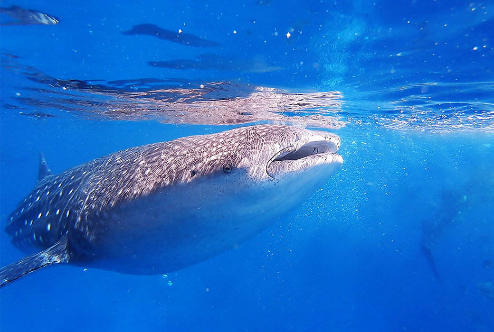

海底的明星 - 豆腐鯊 !

編輯部 2020/07/01
外型萌朧可愛的鯨鯊及鬼蝠魟屬等海洋魚類，正式列為瀕臨絕種第1級保育類野生動物，新北市政府動保處呼籲，對於這些海洋珍寶，民眾應善盡保育責任，若於公告前已持有以上海洋保育類或產製品，例如骨頭、牙齒、魚皮製品等，應於109年8月31日前提供相關證明文件至動保處登記備查，以免變成非法持有。
【別成為殺害牠的幫凶】
鯨鯊生長速度緩慢，一般需要大約30年才能達到性成熟期，而絕大部分被獵殺的鯨鯊，都還未達到性成熟期，尚在幼年或青年時代就被殺害，例如海產店的「豆腐鯊」菜單就是沒有買賣就沒有傷害，今天是國際鯨鯊日，是提醒我們人類對鯨鯊很殘忍的日子，希望每個人都能夠善盡地球公民的責任，一起守護鯨鯊。